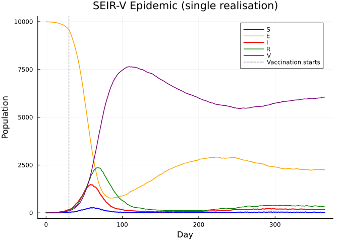
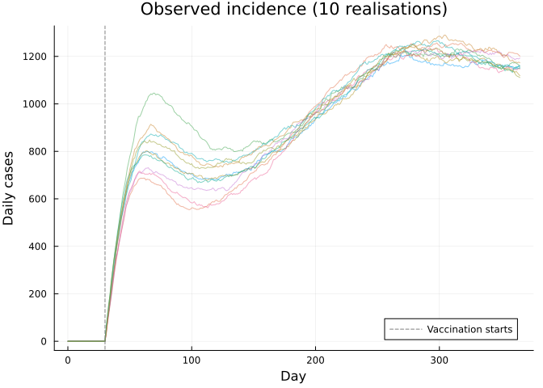
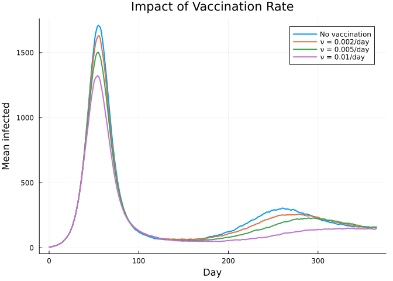

Advanced Model: SEIR with Vaccination and Waning
Introduction
This vignette demonstrates a more complex model: an SEIR epidemic with vaccination, waning immunity, and time-varying vaccination rate — combining arrays, interpolation, incidence tracking, and inference.
using Odin
using Plots
using Statistics
using LinearAlgebraModel Definition
A stochastic SEIR model with:
- Vaccination of susceptibles at a time-varying rate
- Waning immunity from both natural infection and vaccination
- Incidence tracking via
zero_every - Observation model for case data
seir_vax = @odin begin
# Transitions
n_SE = Binomial(S, 1 - exp(-beta * I / N * dt))
n_EI = Binomial(E, 1 - exp(-sigma * dt))
n_IR = Binomial(I, 1 - exp(-gamma * dt))
n_RS = Binomial(R, 1 - exp(-omega * dt))
n_SV = Binomial(S, 1 - exp(-nu * dt))
n_VS = Binomial(V, 1 - exp(-omega_v * dt))
# State updates
update(S) = S - n_SE - n_SV + n_RS + n_VS
update(E) = E + n_SE - n_EI
update(I) = I + n_EI - n_IR
update(R) = R + n_IR - n_RS
update(V) = V + n_SV - n_VS
# Incidence tracking
initial(cases_inc, zero_every = 1) = 0
update(cases_inc) = cases_inc + n_EI
# Initial conditions
initial(S) = N - E0 - I0
initial(E) = E0
initial(I) = I0
initial(R) = 0
initial(V) = 0
# Observation model
cases ~ Poisson(cases_inc + 1e-6)
# Time-varying vaccination rate
nu = interpolate(nu_time, nu_value, :constant)
nu_time = parameter(rank=1)
nu_value = parameter(rank=1)
# Parameters
beta = parameter(0.4)
sigma = parameter(0.2)
gamma = parameter(0.1)
omega = parameter(0.005)
omega_v = parameter(0.01)
E0 = parameter(5)
I0 = parameter(5)
N = parameter(10000)
endOdin.DustSystemGenerator{var"##OdinModel#277"}(var"##OdinModel#277"(6, [:cases_inc, :S, :E, :I, :R, :V], [:nu_time, :nu_value, :beta, :sigma, :gamma, :omega, :omega_v, :E0, :I0, :N], false, false, true, false, true, Dict{Symbol, Array}()))Simulation
pars = (
beta = 0.4, sigma = 0.2, gamma = 0.1,
omega = 0.005, omega_v = 0.01,
E0 = 5.0, I0 = 5.0, N = 10000.0,
nu_time = [0.0, 30.0],
nu_value = [0.0, 0.005],
)
sys = System(seir_vax, pars; dt=1.0, seed=42)
reset!(sys)
times = collect(0.0:1.0:365.0)
result = simulate(sys, times)
p1 = plot(times, result[1, 1, :], label="S", lw=2, color=:blue)
plot!(p1, times, result[2, 1, :], label="E", lw=1.5, color=:orange)
plot!(p1, times, result[3, 1, :], label="I", lw=2, color=:red)
plot!(p1, times, result[4, 1, :], label="R", lw=1.5, color=:green)
plot!(p1, times, result[5, 1, :], label="V", lw=1.5, color=:purple)
vline!(p1, [30.0], ls=:dash, color=:gray, label="Vaccination starts")
xlabel!(p1, "Day")
ylabel!(p1, "Population")
title!(p1, "SEIR-V Epidemic (single realisation)")
Multiple Realisations
p2 = plot(xlabel="Day", ylabel="Daily cases",
title="Observed incidence (10 realisations)")
for seed in 1:10
sys = System(seir_vax, pars; dt=1.0, seed=seed)
reset!(sys)
r = simulate(sys, times)
plot!(p2, times, r[6, 1, :], alpha=0.5, lw=1, label=nothing)
end
vline!(p2, [30.0], ls=:dash, color=:gray, label="Vaccination starts")
p2
Comparing Vaccination Scenarios
scenarios = [
("No vaccination", [0.0, 365.0], [0.0, 0.0]),
("ν = 0.002/day", [0.0, 30.0], [0.0, 0.002]),
("ν = 0.005/day", [0.0, 30.0], [0.0, 0.005]),
("ν = 0.01/day", [0.0, 30.0], [0.0, 0.01]),
]
p3 = plot(xlabel="Day", ylabel="Mean infected",
title="Impact of Vaccination Rate")
for (label, nu_t, nu_v) in scenarios
# Run 20 realisations and average
I_mean = zeros(length(times))
for seed in 1:20
p = merge(pars, (nu_time=nu_t, nu_value=nu_v))
sys = System(seir_vax, p; dt=1.0, seed=seed)
reset!(sys)
r = simulate(sys, times)
I_mean .+= r[3, 1, :]
end
I_mean ./= 20
plot!(p3, times, I_mean, label=label, lw=2)
end
p3
Fitting to Data
Generate synthetic data from the model, then fit β and σ:
# Generate "observed" data
true_pars = (
beta=0.4, sigma=0.2, gamma=0.1,
omega=0.005, omega_v=0.01,
E0=5.0, I0=5.0, N=10000.0,
nu_time=[0.0, 30.0], nu_value=[0.0, 0.005],
)
sys_true = System(seir_vax, true_pars; dt=1.0, seed=1)
reset!(sys_true)
obs_times = collect(0.0:1.0:180.0)
true_result = simulate(sys_true, obs_times)
obs_cases = max.(1, round.(Int, true_result[6, 1, 2:end]))
data = ObservedData(
[(time=Float64(t), cases=obs_cases[t]) for t in 1:180]
)
# Set up inference
packer = Packer([:beta, :sigma])
function make_pars(theta)
merge(true_pars, (beta=theta[1], sigma=theta[2]))
end
filter = Likelihood(seir_vax, data; n_particles=100, dt=1.0, seed=42)
ll_model = DensityModel(
function(theta)
p = make_pars(theta)
return loglik(filter, p)
end;
parameters = ["beta", "sigma"],
domain = [0.0 2.0; 0.0 2.0],
)
prior = @prior begin
beta ~ Gamma(4.0, 0.1)
sigma ~ Gamma(2.0, 0.1)
end
posterior = Odin.monty_model_combine(ll_model, prior)
sampler = random_walk(diagm([0.001, 0.001]))
samples = sample(posterior, sampler, 2000;
initial=repeat([0.3, 0.15], 1, 4), n_chains=4, n_burnin=500)
println("Parameter estimates (posterior mean ± std):")
for (i, name) in enumerate([:beta, :sigma])
vals = vec(samples.pars[i, :, :])
println(" $name: $(round(mean(vals), digits=3)) ± $(round(std(vals), digits=3))")
endParameter estimates (posterior mean ± std):
beta: 1.02 ± 0.135
sigma: 0.027 ± 0.002Summary
This vignette demonstrated:
| Feature | Usage |
|---|---|
| Interpolation | Time-varying vaccination rate |
zero_every | Daily incidence tracking |
Comparison (~) | Poisson observation model |
| Particle filter | Likelihood estimation |
| MCMC | Posterior inference on β, σ |
| Multiple scenarios | Comparing vaccination strategies |